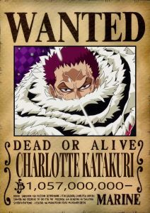
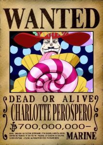
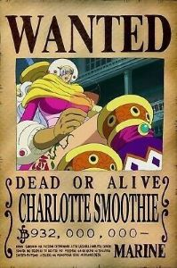
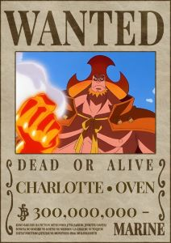
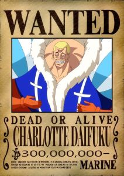
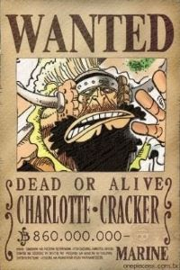

<div class="container">
  <article>
    <h1>Charlotte Linlin - Big Mom</h1>
    
    <p>
      Big Mom, também conhecida como Charlotte Linlin, era uma dos Yonkou, os
      quatro imperadores mais poderosos dos mares em One Piece. Seu sonho é
      criar um mundo onde todas as raças possam coexistir em harmonia. Ela é a
      líder da Ilha Whole Cake e tem uma grande família composta por seus filhos
      e subordinados. Ao longo de sua trajetória, Big Mom demonstrou uma imensa
      força e crueldade, sendo uma das figuras mais temidas dos mares. Ela é
      derrotada por Law e Kid na Ilha de Wano.
    </p>

    <h2>Soru Soru no Mi</h2>
    
    <p>
      É uma Fruta do Diabo do tipo Paramecia, a Soru Soru no Mi concede ao
      usuário a capacidade de manipular e controlar almas. Isso inclui a
      capacidade de extrair e armazenar almas de seres vivos, assim como
      manipulá-las para várias finalidades. Uma das habilidades principais é a
      capacidade de criar seres chamados "Homies" a partir das almas que foram
      extraídas e armazenadas pelo usuário. Estes Homies são objetos ou
      criaturas que ganham vida própria e servem ao usuário conforme sua
      vontade.
    </p>

    <h2>Bando Piratas Big Mom</h2>
    
    <p>
      Os Piratas Big Mom operam a partir de Totto Land, um arquipélago de 34
      ilhas, cada uma governada por um dos filhos ou filhas de Big Mom. Eles são
      conhecidos por sua força militar esmagadora, sua influência no Novo Mundo
      e sua capacidade de aterrorizar e controlar territórios.
    </p>
    <p>
      Big Mom governa sua tripulação e território com punho de ferro, garantindo
      lealdade através do medo e da manipulação das almas. A tripulação é
      extremamente diversificada e poderosa, com cada membro contribuindo com
      suas habilidades únicas para a força total dos Piratas Big Mom.
      <br />
      <br />
      Seus principais subordinados são:
    </p>
    <div class="imediatos">
      
      
      
      
      
      
    </div>
  </article>
</div>
